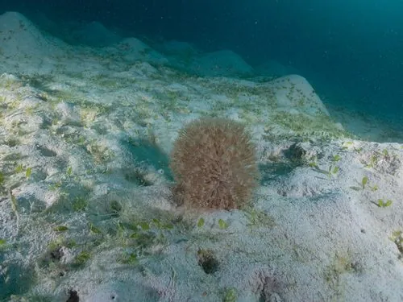

其他无脊椎动物 · 动物界
海仙人掌 Cavernularia obesa

形如仙人掌、夜间膨大挺立的海鳃，栖于沙泥海底，柄部插入沙中，受触即缩回沙内，能发微弱荧光。
- 分类
- 门刺胞动物门纲珊瑚纲目海鳃目科海仙人掌科属海仙人掌属
- 栖息环境
- 沙泥底质浅海，柄部插入沙中，夜间挺出沙面
- 地理分布
- 中国黄海、东海及日本沿海
- 保护级别
- 常见种，无保护级别；底拖网会破坏其栖息地
物种志
海仙人掌的群体由一个粗壮的肉茎和许多水螅体组成，伸展时高可达二十厘米，形如一株肥厚的仙人掌。肉茎内含大量水分，靠水压支撑直立；水螅体沿肉茎表面分布，触手八枚，排列成羽状。白天它缩成一团埋在沙里，夜间吸水膨胀、挺出沙面取食，形态变化之大让人几乎认不出是同一个动物。
它分布于中国黄海、东海以及日本沿海，栖息在沙泥底质的浅海，柄部插入沙中固定。它以触手捕捉浮游生物和有机颗粒，受扰动时会迅速排水缩回沙中，动作极快。它的群体能发出微弱的生物荧光，受刺激时更为明显。它属于海鳃目，与石珊瑚不同，没有坚硬的骨骼，靠水压支撑身体，拖网和采捕容易造成损伤。
形态与习性
- 群体高度伸展时可达二十厘米
- 形态肉茎粗壮，形如仙人掌
- 水螅体触手八枚，沿肉茎表面羽状排列
- 昼夜变化白天缩入沙中，夜间吸水挺立
- 发光可发微弱生物荧光
- 支撑无骨骼，靠体内水压直立
趣味知识
- 白天它缩在沙里只有一团，夜里吸水膨胀，变成一株立着的仙人掌。
- 被碰一下，它几秒钟内就把水排光缩回沙里，只留一个小坑。
- 它不是植物，而是一群水螅体共用的一个肉茎。